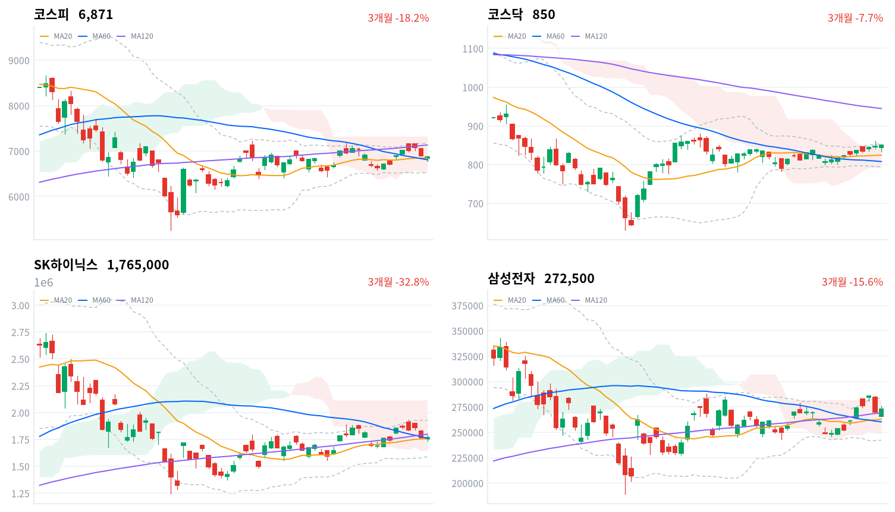

미국 10년물 금리가 더 오른 날 코스피는 장중 60일선 아래까지 밀렸다가 마지막 한 시간에 낙폭 대부분을 되찾았다. 외국인은 이틀째 3조원 안팎을 팔았고(당일 잠정), 매도는 반도체 대형주에 몰린 반면 장비·기판주는 올랐다.
우리는 대형주 매도를 미국 금리 이월 하나로 설명하기 어려워졌다고 판단한다. 코스피 노출은 유지하고, 반도체 대형주 되돌림은 미국 8월 PCE(9월 30일) 뒤 금리 방향을 확인할 때까지 미룬다.
코스피는 0.27% 내린 6,871로 마감했지만, 장중 흐름은 그보다 거칠었다. 오후에 6,783까지 밀려 60일 이동평균 아래로 내려갔다가 마지막 한 시간에 90포인트 가까이 되올랐다. 외국인은 코스피에서 2조9,626억원을 순매도해 이틀째 3조원 안팎을 팔았다(당일 잠정). 그런데도 반도체와반도체장비 업종은 1.34% 올랐다. 장비·파운드리·기판주가 뛰는 동안 거래대금 1위 SK하이닉스는 0.17% 내렸고, 배당락일을 맞은 삼성전자는 0.93% 오르는 데 그쳤다.
채권시장은 오늘 미국 금리를 따라가지 않았다. 9월 28일(현지) 미국 10년물은 5.242%로 더 올랐지만 국고채 10년물은 6.3bp 내렸다. 그렇다고 신용 위험의 값을 내리지는 않았다. 회사채 AA- 3년물과 국고채 3년물의 금리차는 67.9bp로 1.0bp 벌어졌고, 최근 2년(533거래일) 가운데 이보다 넓었던 날이 49일뿐이다. 채권은 금리 이월을 멈추고 신용 경계만 유지했는데, 주식에서는 외국인이 대형 반도체를 계속 팔았다. 우리는 이 어긋남을 대형주 매도에 금리 말고 다른 몫이 섞이기 시작했다는 신호로 본다.
근거는 매도가 몰린 자리다. 금리가 전부라면 멀티플이 높은 반도체 전반이 함께 눌려야 하는데, 오늘은 장비·기판주가 오르고 대형 두 종목만 제자리였다. 대형주에는 따로 쌓인 재료가 있다. 오픈AI가 최상위 모델 학습을 멈췄다는 보도가 AI 인프라 수요 심리를 건드렸고, 삼성전자는 배당락일이었으며, 매일경제는 두 회사의 자사주 매입이 막바지라고 전했다. 외국인이 금리와 무관하게 여름 내 쏠렸던 반도체 대형주 비중을 줄이는 중일 수도 있으나, 미국 금리가 더 오른 날이라 금리 해석을 아직 버리지 않는다. 두 설명은 미국 10년물이 9월 25일 수준(5.181%) 아래로 내려오는 날 외국인 순매도가 1조원 미만으로 줄어드는지에서 갈린다.
코스피 노출은 다음 세션까지 유지하고, 반도체 대형주 되돌림은 아직 담지 않는다. 오늘 지수 등락에는 큰 무게를 두지 않는다. 장중에 60일선을 깼다가 종가로 되찾은 날이라 방향보다 지지를 한 번 확인한 의미가 크다. 오늘은 새 상품을 대지 않는다. 기다리는 것은 9월 30일 밤(한국시간) 미국 8월 PCE 뒤 미국 10년물이 9월 25일 수준 아래로 내려오는지와, 10월 1일 9월 수출입동향의 반도체 수출이다. 10월 1일부터 증권사 신용공여 관리가 강화돼 이틀 동안 외국인 물량을 받아낸 개인의 매수 여력이 줄 수 있으니, 금리가 멈추기 전에 대형주 되돌림을 서두를 이유는 없다.
코스피가 60일 이동평균(6,808) 아래에서 마감하면 이 판단을 다시 본다. 오늘 종가보다 약 0.9% 낮은 자리이고, 오늘 장중 저가는 이미 그 아래였다. 종가로 이 선을 내주면 매도가 대형 반도체 밖으로 번졌다고 보고, 노출 유지의 전제를 거둔다.
9월 28일 판단은 유효하다. 그날 정한 무효화 선인 코스피 6,832는 종가로 지켜졌고 여유는 39포인트였다. 다만 장중 저가는 그 선보다 49포인트 아래까지 내려가, 선을 지킨 것은 마지막 한 시간의 반등 덕이었다. 기다린 조건은 오지 않았다. 미국 10년물은 내려오지 않고 더 올랐고, 9월 수출입동향은 아직 나오지 않았다. 노출 등급은 유지하되 두 가지를 고친다. 무효화 선을 오늘의 60일선으로 옮기고, 대형주 매도를 금리 이월 하나로 읽던 근거에 대형주 고유 요인을 함께 올린다.
전일 미국 3대 지수는 9월 28일(현지) 모두 내렸다(S&P500 -0.77%, 나스닥 -0.92%, 다우 -0.67%). 오늘 아시아도 대체로 약했다. 닛케이(-0.60%)·항셍(-0.48%)·대만가권(-0.82%)이 내렸고 상해종합만 0.18% 올랐다. 네 지수 평균은 0.43% 하락이었고, 코스피는 이보다 0.16%포인트 덜 내렸다.
시가는 전 거래일 종가 6,890보다 45포인트 낮은 6,844로, 밤사이 미국 약세가 개장가에 먼저 반영됐다. 한국 정규장 동안 미국 선물은 거의 움직이지 않았다(S&P500 선물 +0.03%, 나스닥100 선물 +0.06%). 장중에 미국 쪽에서 새로 들어온 충격은 없었다.
마감 위치를 보면 코스피는 하루 범위의 위쪽 4분의 1 안에서 끝났고, 코스닥은 849.80으로 사실상 하루 고가에서 끝났다. 원/달러 환율은 오전 9시반 1,361원이 고점이었고, 오후 3시 1,354원까지 내려간 뒤 1,357원으로 마감했다. 외국인이 코스피를 대규모로 판 날에도 원화는 장중 강해졌다.
미국 금리 부담이 이어진 가운데 대형 반도체와 나머지 업종이 서로 다른 이유로 움직인 날이다. 머니투데이는 미국 10년물이 2007년 6월 이후 최고로 오르고 트럼프 행정부의 이란 휴전 제안 거절로 유가가 오른 것이 이틀째 코스피를 눌렀다고 전했고, 뉴스핌은 오픈AI 학습 중단 보도가 반도체 대형주의 상단을 막았다고 봤다. 건설과 2차전지는 금리·유가 부담 속에 크게 내렸고, 반도체 장비·기판주는 공급계약 공시와 AI 서버 수요 기대로 올랐다. 시간외 거래 흐름은 확인하지 못했다.
코스피는 연휴 뒤 이틀 동안 20일선과 60일선이 겹친 지지 구간에서 버티고 있다. 오늘은 장중에 그 구간을 뚫고 내려갔다가 종가로 되돌아왔다. 최근 20거래일 고점(7,172)과는 4% 넘게 벌어졌고, 120일선은 여전히 위에 있다. 코스닥은 반대로 사흘째 올라 850선에 붙었다.
| 지수 | 종가 | 등락률 | 시가 | 고가 | 저가 | 전일 종가 |
|---|---|---|---|---|---|---|
| 코스피 | 6,870.81 | -0.27% | 6,844.41 | 6,898.36 | 6,782.99 | 6,889.74 |
| 코스닥 | 849.80 | +0.38% | 843.87 | 849.82 | 833.62 | 846.58 |
낮게 출발한 코스피는 오전에 전일 종가를 잠깐 넘어섰지만(고가 6,898) 그 자리를 지키지 못했다. 오후 들어 다시 밀리면서 20일선과 60일선을 차례로 내줬고, 저가 6,783은 60일선보다 25포인트 낮았다. 마지막 한 시간에 낙폭 대부분을 되찾아 종가는 두 이동평균 위로 돌아왔다. 하루를 버틴 쪽은 반도체였고(삼성전자 +0.93%·배당락일, SK스퀘어 +1.64%, 한미반도체 +7.46%), 나머지 대형주는 약했다(현대차 -1.27%, POSCO홀딩스 -3.95%, LG화학 -4.76%).
대형주 안에서도 결이 갈렸다. 거래대금 1위 SK하이닉스는 0.17% 내려 이틀째 약했고, 같은 반도체라도 부품·기판 쪽은 강했다(삼성전기 +1.93%, 대덕전자 +5.60%). 반도체 밖 대형주는 대부분 밀렸다. 조선(삼성중공업 -3.83%, HD현대중공업 -2.94%)과 방산(한화에어로스페이스 -2.13%)이 약했고, 금리 부담을 받는 건설과 전날 태양광 재료로 급등했던 종목(한화솔루션 -2.55%, OCI홀딩스 -5.25%)도 되밀렸다. 금융주는 보합 근처에서 버텼다(KB금융 -0.40%, 하나금융지주 0.00%). 지수 낙폭이 작았던 것은 반도체 비중이 큰 코스피의 구성 덕이고, 종목 수로 보면 내린 쪽이 훨씬 많은 하루였다.
코스닥은 오전에 834 근처까지 밀렸다가 오후 내내 올라 하루 고가에서 끝났다. 코스피에서 대형주를 판 외국인은 코스닥에서도 팔았지만(당일 잠정), 지수는 일목 구름 위를 지키며 볼린저 상단에 다가섰다. 대형 반도체 매도가 중소형주로 번지지 않은 이틀째 날이다.

코스피·코스닥·SK하이닉스·삼성전자 3개월 일봉에 이동평균(20·60·120)·볼린저밴드·일목균형표 구름대를 겹쳐 그렸다. 상승 캔들은 녹색, 하락 캔들은 적색이다. 삼성전자의 9월 29일 캔들은 배당락이 반영된 가격이다.
코스피는 60일선(6,808) 위, 120일선(7,133) 아래에서 마감했고 일목 구름 안에 있다. 120일선을 되찾으면 20일 고점(7,172)이 다음 저항이고, 60일선을 종가로 내주면 일목 기준선(6,790)이 마지막으로 가까운 지지선이다.
코스닥은 일목 구름 상단(843) 위에서 사흘째 올라 네 종목 가운데 가장 단단하다. 볼린저 상단(854)과 20일 고점(861)을 넘으면 위쪽이 열리고, 구름 상단을 내주면 20일선(824)까지 지지가 비어 있다.
SK하이닉스(176만5천원)는 20일선과 60일선을 간신히 지키고 있지만 120일선(180만원) 아래에서 이동평균이 역배열이고, 일목 구름 안에 있다. 120일선을 되찾으면 볼린저 상단(193만원)까지 열리고, 일목 기준선(175만원)을 내주면 구름 하단(165만원)이 다음 지지선이다.
삼성전자(27만2,500원)는 배당락일에도 세 이동평균 위를 지켰지만 일목 구름 안에 있다. 구름 상단(28만2천원)을 넘으면 20일 고점(28만5,500원)이 다음 저항이고, 120일선(26만9천원)을 내주면 20일선(26만3천원)이 다음 지지선이다.
위 레벨은 이동평균·볼린저밴드·일목균형표와 스윙 고저를 기계적으로 계산한 값이며 투자 권유가 아니다.
| 주체 | 순매수(억원) |
|---|---|
| 개인 | +11,938 |
| 외국인 | -29,626 |
| 기관 | +1,250 |
| 주체 | 순매수(억원) |
|---|---|
| 개인 | +1,461 |
| 외국인 | -1,293 |
| 기관 | +66 |
외국인은 코스피에서 2조9,626억원을 순매도했다(전 거래일 3조2,682억원 순매도, 당일 잠정). 이틀 합계는 6조2,308억원이다. 개인은 1조1,938억원을 사들였지만(전 거래일 2조6,467억원 순매수) 받는 규모는 절반 아래로 줄었고, 기관은 1,250억원 순매수로 돌아섰다(전 거래일 1조169억원 순매도).
수급과 지수는 따로 움직였다. 외국인이 이틀째 3조원 안팎을 판 날에도 지수 낙폭은 작았다. 헤럴드경제는 외국인 매도의 대부분이 반도체에 몰렸다고 전했는데, 종목별 투자자 자료가 없어 이 부분은 보도로만 확인된다. 매일경제는 최근 한 달 기타법인으로 잡히는 자사주 매입이 31조3,270억원 순매수로 수급을 지탱했고, 삼성전자 매입은 3~4거래일 안에 끝날 것으로 봤다. 그 수요가 빠진 뒤에도 외국인 매도가 같은 크기로 이어지는지가 이번 주 후반부터의 확인점이다.
코스닥에서는 외국인이 1,293억원 순매도로 돌아섰고(전 거래일 469억원 순매수), 개인이 1,461억원을 사들였다(당일 잠정). 규모는 코스피의 20분의 1에도 못 미쳐, 외국인 매도의 무게는 여전히 코스피 대형주에 있다.
장중 누적 수급과 프로그램 매매는 받을 수 있는 자료가 없어 싣지 않는다.
| 순위 | 종목/ETF | 구분 | 거래대금 | 비고 |
|---|---|---|---|---|
| 1 | SK하이닉스 | 개별주 | 5.09조원 | - |
| 2 | 삼성전자 | 개별주 | 4.18조원 | 배당락일 |
| 3 | 반도체 테마 ETF | 테마·롱 | 1.89조원 | 28종 합산 |
| 4 | KODEX CD금리액티브(합성) | 단기금리·현금성 | 1.10조원 | - |
| 5 | 삼성전기 | 개별주 | 0.83조원 | - |
| 6 | 삼성전자우 | 개별주 | 0.76조원 | 배당락일 |
| 7 | SK스퀘어 | 개별주 | 0.47조원 | - |
| 8 | SK하이닉스 레버리지 | 레버리지·롱 | 0.27조원 | 5종 합산 |
| 9 | 2차전지 테마 ETF | 테마·롱 | 0.26조원 | 14종 합산 |
| 10 | 삼화콘덴서 | 개별주 | 0.22조원 | - |
단위 백만원 원본을 조 단위로 환산했다. 같은 기초자산 ETF는 방향별로, 같은 테마 섹터 ETF는 테마별로 묶고 지수·해외 ETF는 제외했다.
거래는 여전히 반도체 대형주에 몰렸다. SK하이닉스와 삼성전자 두 종목의 거래대금은 9.27조원으로, 반도체 테마 ETF 28종을 합친 1.89조원의 5배 가까이 된다. 매매는 바스켓보다 개별 대형주에서 이뤄졌다. 반도체 ETF의 거래가 많았던 것은 WICS 반도체 섹터가 3.58% 오른 가격과 같은 쪽이지만, 거래대금만으로는 매수와 매도 중 어느 쪽이 컸는지 알 수 없다.
부품주가 상위에 올라왔다. 삼성전기(+1.93%)가 5위, 삼화콘덴서(+8.62%)가 10위다. 삼화콘덴서는 확인된 개별 재료가 없다. 2차전지 테마 ETF 14종(0.26조원)은 WICS 2차전지 섹터가 3.55% 내린 날 9위에 들었고, KODEX CD금리액티브(합성)는 단기금리를 따르는 자금 대기용 상품이라 방향성 거래와 결이 다르다.
WICS 12개 섹터 가운데 반도체(+3.58%) 하나만 올랐다. 건설(-4.81%)·2차전지(-3.55%)·조선(-2.20%)이 크게 내렸다. 1주로 넓혀도 반도체(+8.13%)만 올랐고 나머지 11개는 모두 내렸다. 연휴 전인 9월 23일과 같은 반도체 혼자의 날로 돌아왔다.
네이버 업종 기준으로 반도체와반도체장비는 1.34% 올랐고 171종목 가운데 127종목이 상승했다. WICS 반도체와 구성 종목이 달라 수치가 다르지만, 두 분류 모두 반도체 안의 상승이 넓었다는 점은 같다. 전자장비와기기(+2.78%)는 상승률이 가장 높았지만 105종목 가운데 49종목만 올라, 기판주 몇 종목이 업종 수익률을 끌어올렸다.
하락 쪽이 더 넓었다. 기계(-1.70%)는 104종목 가운데 23종목만 올랐고, 자동차 업종은 12종목 가운데 한 종목만 올랐으며 은행은 11종목이 하나도 오르지 못했다. 반도체 밖에서 버틴 업종은 드물었다.
반도체 장비·파운드리가 급등했다(한미반도체 +7.46%, DB하이텍 +9.99%, 이수페타시스 +5.08%). 뉴스핌과 아주경제는 한미반도체가 싱가포르 후공정 업체 UTAC의 태국 법인과 약 78.7억원 규모의 장비 공급계약을 공시했다고 전했고, 이투데이는 8인치 파운드리 단가 인상으로 DB하이텍의 하반기 실적이 좋아질 것이라는 전망을 전했다. 이수페타시스는 AI 서버용 고다층 기판 수요 기대로 기판주와 함께 올랐다. 대형주는 덜 올랐다(삼성전자 +0.93%, SK스퀘어 +1.64%). 삼성전자의 등락은 배당락일 가격이라 전일 종가와 그대로 비교하기 어렵고, 개별 상승 원인은 확인된 보도가 없다.
2차전지가 함께 내렸다(LG에너지솔루션 -3.16%, 삼성SDI -4.13%, 포스코퓨처엠 -5.29%). 재경일보는 LG에너지솔루션이 업황 우려 속에 하락 마감했다고만 전했고, 확인된 개별 재료는 없다. SK이노베이션(-7.77%)도 자회사 공급계약 공시에도 뚜렷한 악재 없이 급락했다고 재경일보는 전했다.
삼성전자우는 1.45% 내렸다. 3분기 배당락일(배당기준일 9월 30일)이라 가격에 배당락이 반영된 값이다. 보통주보다 배당수익률의 비중이 큰 종목이어서 같은 배당락이 더 크게 드러났다고 본다.
건설주가 하루 만에 되밀렸다(대우건설 -7.01%, 현대건설 -6.10%, 삼성E&A -5.70%). 뉴스1은 전날 AI 데이터센터와 원전 기대로 올랐던 건설주가 미국 국채금리와 국제유가 상승에 차익실현 매물까지 겹쳐 내렸다고 전했다. 증권사들은 대미 투자 프로젝트가 실제 수주로 이어지기까지 시간이 걸린다고 지적했다.
기판주가 강했다(코리아써키트 +7.39%, 대덕전자 +5.60%). 재경일보는 대덕전자가 개별 호재 없이, AI 서버가 늘면 고다층 기판 수요도 커진다는 기대를 타고 올랐다고 전했다. 코리아써키트도 같은 기판주 흐름으로 움직였고, 확인된 개별 재료는 없다.
국고채 금리는 미국 금리가 더 오른 날 오히려 내려 전날 급등분 일부를 되돌렸다. 10년물이 3년물보다 더 내려 두 만기의 금리차는 40.0bp로 2.0bp 좁혀졌고, 최근 2년(533거래일)의 한가운데쯤으로 돌아왔다. 원/달러 환율은 1,357원으로 마감해 장중 원화가 강해졌다.
| 지표 | 금리 | 전일比(bp) | 기준일 |
|---|---|---|---|
| 국고채 3년 | 4.076% | -4.3 | 2026-09-29 |
| 국고채 10년 | 4.476% | -6.3 | 2026-09-29 |
| CD 91일 | 3.22% | 0.0 | 2026-09-29 |
| 회사채 AA- 3년 | 4.755% | -3.3 | 2026-09-29 |
| 한국은행 기준금리 | 3.00% | +25.0(전월比) | 2026-08 |
기준금리는 8월 결정 기준이다.
미국 10년물은 9월 28일(현지) 전날보다 6.1bp 더 올랐다. 국고채는 전날 휴장 이틀 치 미국 금리 상승을 한꺼번에 받았고, 오늘은 그 일부를 되돌렸다고 본다. 두 시장의 기준일이 하루 어긋나 있어 같은 날의 반응이 아니라 하루 간격의 비교다. 금리가 오른 쪽은 미국뿐이었고, 국내 금리는 오늘 주식 매도의 원인으로 작동하지 않았다.
국고채 3년물은 기준금리보다 107.6bp 높아, 같은 기간 가운데 넓은 쪽 10% 안에 있다. 이 격차에는 정책 경로 기대와 기간프리미엄이 섞여 있어 인상 횟수로 읽지 않는다. CD 91일물은 3.22%로 움직이지 않아 단기 자금시장은 조용했다.
신용 쪽은 결이 달랐다. 회사채 AA- 3년물은 3.3bp 내려 국고채 3년물보다 덜 내렸고, 그만큼 신용 스프레드는 1.0bp 벌어졌다. 국고채 강세가 신용물까지 고르게 번지지 않았다는 뜻이고, 채권시장의 신용 경계는 전 거래일보다 조금 더 높은 자리에 있다.
머니투데이에 따르면 금융위원회 변제호 자본시장국장은 9월 28일 코리아 프리미엄 위크 기조연설에서 6~7월 반도체 쏠림과 레버리지 확대가 변동성을 키웠다며 레버리지 상품·신용융자·미수 관리를 강화하겠다고 밝혔다. 이찬진 금융감독원장은 오늘 23개 증권사 CEO 간담회에서 신용거래 관리를 당부했다. 한국금융신문은 금융투자협회 자율안에 따라 10월 1일부터 종합금융투자사업자의 신용공여 잔고가 자기자본의 90% 이내로 묶이고, 신용융자 가운데 특정 종목 비중이 15%를 넘으면 그 종목의 개인 신용한도가 줄어든다고 전했다.
이 정책은 수급 경로로 주가에 닿는다. 연휴 뒤 이틀 동안 외국인이 판 물량을 개인이 받아냈는데, 신용 매수 여력이 줄면 그 흡수력이 먼저 약해진다. 피해는 신용 비중이 높은 종목과 레버리지 상품 수요, 신용융자 이자수익이 줄어드는 증권사 쪽에 선다. 오늘 증권 업종이 1.08% 내렸지만 이 재료만의 반응으로 가르기는 어렵다. 10월 1일 시행 뒤 금융투자협회가 공시하는 신용융자 잔고와, 15% 기준에 걸리는 종목이 나오는지가 다음 확인점이다.
데일리안은 이재명 대통령이 결제주기 단축의 조기 시행을 압박하는 가운데, 미국예탁결제원과 홍콩거래소 관계자들이 속도보다 안정적 도입을 강조했다고 전했다. 국내 시장은 지금 매매 이틀 뒤 결제한다. 시행되면 외국인 결제·환전 일정이 짧아지는 수급 경로와, 시장 인프라 평가가 좋아지는 멀티플 경로로 닿는다. 오늘 가격에서 이 재료의 반응은 확인되지 않았고, 금융위원회의 시행 일정은 아직 미확정이다.
한국은행 기준금리는 8월 인상 뒤 3.00%이고, 오늘 새로 나온 통화정책 결정은 없다. 국내 금리를 움직일 다음 재료는 밖에 있다. 9월 30일 밤(한국시간) 미국 8월 PCE 물가가 미국 10년물의 방향을 정하고, 10월 1일 산업통상자원부의 9월 수출입동향이 반도체 이익 하향 서술을 상쇄할 만큼 강한지를 보여준다. 금투세·대주주 양도세·배당소득 분리과세는 오늘 새 변화가 없다.
"삼전·닉스 3분기 실적, 7조·8조 낮다"… 1300원대 환율에 수출기업 '발목'한국일보 · 9월 29일
원·달러 환율이 약 1,357원으로 2분기 말보다 약 11% 내리면서 수출기업의 실적 부진 우려가 커졌다. DS투자증권은 환율 하락으로 삼성전자와 SK하이닉스의 3분기 영업이익이 시장 전망치보다 각각 7조원, 8조원 낮은 104조원, 70조원에 그칠 것으로 예상했고, SK하이닉스 목표주가도 310만원에서 264만원으로 내렸다. 자동차주도 원화 강세로 수출액이 줄 우려 속에 KRX 자동차지수가 16.73% 하락했다. 반면 항공과 정유는 수입 비용 감소로 실적이 좋아질 전망이다. 삼성증권은 환율이 9% 내리면 대한항공 순이익이 7,500억원 개선된다고 분석했다. 메리츠증권은 내년 반도체 기업들의 원화 수요가 458조원에 달해 원화 강세가 이어진다고 내다봤다.
연이틀 '금리찬물'…6800 갇힌 코스피, 시선은 美 물가지표로머니투데이 · 9월 29일
미국 국채 금리 상승세가 이틀 연속 국내 증시를 눌러 코스피는 0.27% 내린 6870.81에 마감했다. 미국 10년물 국채 금리는 28일 5.241%까지 올라 2007년 6월 이후 최고치를 기록했고, 트럼프 행정부의 이란 휴전 제안 거절로 국제유가가 오르면서 금리 상승 압력이 커졌다. 연준 이사의 인플레이션 지속 가능성 언급과 오픈AI의 GPT-6.1 아스트라 출시 취소도 투자심리를 식혔다. 삼성전자는 전날 급락분을 일부 회복하며 지수 하방 압력을 덜었지만, 비반도체주는 LG에너지솔루션과 현대차 등에서 광범위한 매도세를 보였다. 시장은 30일 밤 발표될 미국 8월 PCE 물가지수와 마이크론 실적, 고용지표를 통해 추세를 판단할 예정이다.
실적 시즌 '환율'에 울고 웃고…3분기 전망치 희비 갈렸다이데일리 · 9월 29일
3분기 실적 발표를 앞두고 상장사 256곳의 영업이익 전망치가 257조6,751억원으로 한 달 전보다 1.5% 내려갔다. 반도체 대형주의 영향이 컸다. 원·달러 환율 변동에 따른 원화 환산 효과와 원가 증가가 삼성전자·SK하이닉스의 이익 추정치를 끌어내렸다. 증권업도 거래대금 감소로 3분기 영업이익 전망치가 8.3% 낮아진 3조5,031억원으로 집계됐다. 반면 정유·에너지 업종은 국제유가 상승과 정제마진 개선 기대로 전망치가 높아졌고, SK이노베이션의 영업이익 전망은 18.3% 상향됐다. 항공운송도 환율 효과로 대한항공의 순이익 전망치가 383.3% 올라 5,010억원이 됐다. 3분기 실적은 환율과 유가, 거래대금 같은 외부 변수에 따른 업종별 수익성 차이가 가를 전망이다.
홍콩 원픽에 美 규제 법안…중학개미 '흔들', 국민연금 '못 판다'머니투데이 · 9월 29일
미국 상원이 중국 광트랜시버 기업 중지이노라이트를 국방조달에서 배제하는 법안을 발의하자 이 종목은 홍콩증시 상장 후 최대 낙폭(12.21%)을 기록했다. 국내 개인투자자는 지난 두 달간 이 종목을 591억원 순매수해 홍콩증시 최다 매수 종목으로 만들었지만 주가 급락에 흔들리고 있다. 국민연금은 상장 전 코너스톤 투자로 참여했으나 보호예수 규정 때문에 내년 1월까지 주식을 팔 수 없다. 중지이노라이트는 AI 데이터센터용 광트랜시버를 만들며 미국 매출 비중이 61.7%에 이르지만, 중국군사기업으로 지정돼 규제 위험에 노출돼 있었다. 국회는 국민연금의 지정학적 리스크 평가가 미흡했다고 지적했고, 국민연금은 투자원칙 점검을 약속했다.
'앞당기라'는 李대통령…해외선 "'속도'는 T+1 목표 아냐"데일리안 · 9월 29일
이재명 대통령이 증권 결제주기 단축(T+1)의 조기 시행을 압박하는 가운데, 해외 전문가들은 안정적인 제도 도입이 먼저라고 강조했다. 국내 증권시장은 지금 T+2(이틀 뒤 현금 인수)로 운영되며, T+1이 도입되면 판매 다음 날 현금을 받을 수 있다. 미국이 가장 먼저 이 제도를 도입했고 홍콩 등도 추진 중이어서 글로벌 기준에 맞출 필요가 있다. 다만 해외 선진시장은 속도보다 안정성을 강조한다. 미국예탁결제원 최고리스크책임자는 안전한 속도와 신뢰할 수 있는 일정, 광범위한 시장 테스트가 필수이고 도입 뒤 수개월간 모니터링이 필요하다고 지적했다. 홍콩거래소 전무는 T+0 경험이 있는데도 2년째 업계와 소통하며 3단계 의견수렴을 진행 중이라고 설명했다.
정부는 '빚투' 조이는데…카카오페이證 신용공여 170% 폭증더팩트 · 9월 29일
정부와 금융당국이 신용융자와 미수거래 같은 레버리지 투자 규제를 강화하는 가운데 카카오페이증권의 신용공여 규모가 1년 사이 168.5% 늘어 2,729억원에 달했다. 한국투자증권(73.2%), NH투자증권(44.3%), 키움증권(41.8%)보다 훨씬 가파른 증가세다. 신용거래융자금이 1,730억원으로 전체의 63.4%를 차지해 실제 주식 매수용 차입이 대부분이다. 금융당국은 신용공여 한도를 자기자본의 100%에서 90% 이내로 낮추고, 신용융자 최저 보증금률을 5%포인트 높인 50%로 올릴 예정이다. 미성년자 미수거래도 명문화해 제한한다. 카카오페이증권은 최근 담보비율을 잘못 안내해 반대매매 사고를 불렀고, 금감원은 증권사의 수익 우선 영업관행을 경고했다.
ETF 성장 주춤하자…50억미만 상품 줄줄이 퇴출서울경제 · 9월 29일
코스피가 약세를 보이면서 국내 ETF 시장이 축소되고 있다. 29일 한국거래소 집계에 따르면 ETF 순자산 총액은 456조 6064억 원이다. 6월 19일의 역대 최고치 528조 7755억 원 대비 72조 1691억 원(13.6%) 감소했다. 삼성전자와 SK하이닉스 등 주가 하락의 영향을 받은 것이다. 시장 위축 속에서 소규모 상품 정리가 가속화되고 있다. 이달 키움투자자산운용 3종과 한국투자신탁운용 3종 등 총 6개 ETF가 1개월 이상 원본액 50억 원 미만 상태를 유지해 상장폐지 절차를 밟고 있다. 규정상 설정 1년 경과 후 이 조건이 한 달간 지속되면 운용사의 임의 해지가 가능하다. 월별 신규 상장 종목 수는 5월 32개에서 9월 13개로 줄었고, AI와 반도체 같은 특정 테마에 집중돼 있다.
자사주 거의 다 샀고 … 삼전닉스 주가는요?매일경제 · 9월 29일
삼성전자와 SK하이닉스의 자사주 매입이 다음달 초중순 완료될 예정이다. 29일 기준 삼성전자는 15조원 규모 중 87.3%인 13조1000억원을 집행했으며, 현재 하루 5700억원 규모를 매입 중이어서 3~4거래일 내 종료될 전망이다. SK하이닉스는 40조원 대비 75%가 진행돼 향후 10거래일을 전후해 완료될 것으로 예상된다. 최근 한 달간 외국인과 개인이 각각 16조8270억원, 14조8830억원을 순매도하는 동안 기타법인으로 분류되는 자사주 매입은 31조3270억원을 순매수해 수급을 지탱했다. 자사주 매입 종료 후에는 외국인의 지속적 순매도와 미국 금리 불안이 증시에 부담이 될 수 있다. 단기적으로는 30일 발표되는 마이크론 실적과 반도체 업황 가이던스, 10월 말 삼전닉스의 3분기 실적 발표가 주가 향방을 결정할 변수다.
서학개미 1조 산 美메모리 ETF 한국판 출격한국경제 · 9월 29일
신한자산운용이 다음 달 7일 'SOL 글로벌DRAM반도체플러스' ETF를 상장한다. 미국 CBOE 산하 BZX거래소에 상장된 '라운드힐 메모리 ETF'(DRAM)가 국내 투자자에게서 6개월간 약 1조1,000억원 순매수를 받으며 인기를 끈 데 따른 것이다. 새 상품은 글로벌 메모리 선도 기업인 삼성전자·SK하이닉스·마이크론·키옥시아·웨스턴디지털에 집중 투자하고, 램리서치·어플라이드머티어리얼즈·KLA 같은 반도체 장비사도 담았다. 기존 상품과 달리 국내 증시에서 원화로 거래할 수 있고 연금계좌로도 투자할 수 있다. 메모리·스토리지 기업 비중을 약 90%로 유지하면서 소재·부품·장비 기업을 함께 넣어 수익원을 넓혔다.
친환경 철수 … SK에코 'AI인프라 기업' 변신매일경제 · 9월 29일
SK에코플랜트가 말레이시아 센바이로 지분 매각을 마치며 친환경 사업에서 사실상 철수했다. 2021년 친환경 기업 전환을 선언한 지 5년 만에 반도체·AI 인프라 기업으로 다시 변신하는 것이다. 올해 상반기 영업이익 1조4,650억원 가운데 98%인 1조4,357억원을 반도체 부문에서 거뒀다. 2024년 11월에는 에센코어 등 반도체 모듈 투자목적법인을 6,700억원 규모로 현물출자 받았고, 산업용 가스 기업 SK에어플러스를 100% 자회사로 편입했다. 반면 지난해 환경 자회사 3곳을 KKR에 1조7,800억원에 팔았고 올해도 태양광·해상풍력 자회사 지분을 넘겼다. 다만 SK하이닉스 의존도가 별도 매출의 69%이고 건설 부문이 상반기 2,230억원 영업손실을 내 당분간 기업공개보다 내실 다지기에 집중할 전망이다.
젠슨 황 "AI, 속도 늦출 게 아니라 가속해야"한국경제TV · 9월 29일
젠슨 황 엔비디아 CEO는 밴 플리트상 수상 연설에서 AI 개발 속도를 늦춰야 한다는 업계 주장을 잘못된 양자택일이라고 반박하고, 오히려 안전을 위해 개발을 가속해야 한다고 주장했다. 그의 설명으로는 챗GPT의 환각 감소와 자동차 안전 기술이 모두 기술 발전으로 이뤄졌고, 안전과 성능은 연결돼 있다. 삼성전자·SK하이닉스와의 파트너십에 대해서는 이보다 더 확신할 수 없다며 신뢰를 드러냈고, 한국의 제조 역량을 세계 최고로 평가했다. 엔비디아는 AI의 비인가 파일 접근을 막는 보안 시스템 '오픈셸'을 공개했고, 자사주 매입 한도를 1,500억달러 늘리기로 했다.
AI·원전 기대 하루 만에 '되돌림'…대우건설 7%·현대건설 6%↓[핫종목]뉴스1 · 9월 29일
AI 데이터센터와 원전 사업 기대로 전날 강했던 건설주가 29일 일제히 내렸다. 대우건설은 7.01% 내린 1만7,370원에 마감했다. 현대건설은 6.10% 떨어진 11만7,000원, 삼성E&A는 5.70% 내린 4만7,150원이었다. 미국 국채금리(10년물 5.26%, 30년물 5.57%)와 국제유가(WTI 배럴당 94달러, 브렌트유 99달러대) 상승이 위험자산 투자심리를 눌렀고, 차익실현 매물도 나왔다. 증권사들은 대미 투자 프로젝트가 실제 수주로 이어지기까지 시간이 필요하고 한국 기업의 구체적 참여율이 아직 정해지지 않았다고 지적했다. 다만 중장기적으로 AI 인프라 투자 확대 방향은 유효하고, 단기적으로는 수주와 매출화 가시성이 높은 데이터센터에 주목할 필요가 있다는 평가가 나왔다.
日 7월 경기일치 지수 120.6·1.7P↑…"2018년 10월래 최고"뉴시스 · 9월 29일
일본 내각부가 발표한 2026년 7월 경기일치지수가 전월 대비 1.7포인트 상승한 120.6으로 2018년 10월 이후 최고 수준을 기록했다. 지수 구성 10개 항목의 움직임으로 산출되는 경기일치지수 상승은 현재 경기가 전월 대비 개선됐음을 의미한다. 중동전쟁으로 인한 연료·석유 가격 상승 억제 정책과 성장성·재정 지속가능성을 균형 있게 추진하는 새 재정정책 체계가 경제활동 회복을 뒷받침했다는 평가다. 수개월 후 경기를 전망하는 선행지수는 117.7로 1.5포인트 오르며 2014년 1월 이래 고수준을 유지했다. 실업률은 2.4%로 하락했고 소비자신뢰지수는 6개월 만에 최고를 기록했으나 고용 규모는 4개월 만에 최저 수준으로 내려갔다. 내각부는 일치지수 기조판단을 '개선되고 있다'로 제시했다.
日정부, 일부 시리아 경제 제재 해제…"부흥에 역할 기대"뉴시스 · 9월 29일
일본 정부가 29일 국무회의에서 시리아의 16개 단체에 대한 경제 제재를 해제하기로 결정했다. 이에 따라 해당 단체들에 단행됐던 자산 동결 조치가 풀린다. 다만 59명의 개인과 15개 단체에 대한 제재는 계속 유지된다. 기하라 미노루 관방장관은 제재 해제 대상 단체들이 시리아의 부흥에 도움이 될 것으로 기대하며, 시리아의 안전과 발전이 중동 지역 전체의 안정에 직결되는 만큼 향후에도 지원을 계속하겠다고 밝혔다. 일본은 2011년 아사드 정권의 인권 탄압을 이유로 미국과 유럽연합 등과 함께 제재를 시작했다. 2024년 12월 정권이 축출된 이후 각국이 제재를 해제하는 추세에 이번에 동참한 것이다.
젤렌스키 "北, 러에 1만명 추가 파병 준비중"매일경제 · 9월 29일
볼로디미르 젤렌스키 우크라이나 대통령은 28일 대국민 연설에서 북한이 러시아에 1만명을 추가로 파병할 준비를 하고 있다고 밝혔다. 그에 따르면 지금 러시아 영토에 주둔한 북한군은 8,000명을 넘고, 추가로 배치될 1만명 규모의 병력은 선발 단계에 있으며 훈련을 거쳐 러시아에 투입될 예정이다. 구체적인 배치 시기는 공개하지 않았다. 그는 러시아가 파병의 대가로 북한에 군사 기술을 넘기고 있다고 주장했다. 또 북한 영토에서 러시아의 기술 지원 아래 샤헤드형 자폭 드론이 생산되고 있다고 지적했다. 샤헤드형 드론은 러시아가 우크라이나 주요 시설을 공격하는 데 대규모로 써 온 무기다.
국제유가가 美국채금리 좌우…상관관계 65%, 걸프전 이후 최고뉴시스 · 9월 29일
중동 전쟁 여파로 국제유가와 미국 10년물 국채금리의 상관관계가 이달 65%로 높아져 1990년 제1차 걸프전 이후 최고 수준에 근접했다. 에너지 가격 급등이 인플레이션과 금리 인상 우려를 자극하면서 유가가 글로벌 채권시장의 핵심 변수로 부상한 것이다. WTI 가격이 배럴당 1달러 오를 때 미국 10년물 국채금리는 약 0.02%포인트 상승하는 관계가 나타났으며, 유럽 천연가스 가격도 올해 160% 급등했다. 미 연준은 이달 2023년 이후 처음 기준금리를 인상했고, 전쟁 장기화로 고유가가 지속되면서 추가 금리 인상 가능성이 커지고 있다. 휴전 협상 전망이 불투명해 금융시장 불확실성도 확대되는 상황이다.
9월 23일 보고서는 그날 코스피 상승이 반도체 이익 재료에 한정된 것인지, 넓은 위험선호의 시작인지를 물었다. 연휴 뒤 첫 세 세션 가운데 WICS 섹터 7개 이상이 오르는 날이 이틀 이상이고 신용 스프레드가 66bp 아래로 좁혀지면 반도체 한정 해석이 약해지고, 반도체만 오르고 스프레드가 68bp 이상이면 지지된다고 적었다. 둘째 날인 오늘은 반도체 하나만 올랐고 스프레드는 67.9bp로 벌어졌다. 모양은 지지 쪽에 가깝지만 스프레드가 기준에 0.1bp 모자라, 판단은 마지막 날인 9월 30일 마감에서 내린다. 반대 쪽 조건은 그날 7개 이상 섹터가 오르고 스프레드가 2bp 가까이 좁혀져야 채워진다.
9월 28일 보고서는 연휴 뒤 반도체 급락이 미국 장기금리의 이월인지, 반도체 고유 재료인지를 물었다. 확인 창 첫날인 오늘은 판단할 수 없다. 미국 10년물이 9월 25일 수준보다 낮아져야 한다는 전제가 성립하지 않았다. 국고채 10년물은 내렸고 반도체 업종이 코스피를 웃돌았지만, 외국인 순매도는 1조원 기준의 세 배에 가까웠다. 삼성전자의 배당락도 대형주 비교를 흐렸다.
오늘 달라진 것은 대안의 무게다. 매도가 반도체 전체가 아니라 대형 두 종목에 몰렸고, 그 두 종목에는 오픈AI 학습 중단 보도와 자사주 매입 막바지라는 고유 요인이 있다. 그래서 오늘의 새 질문은 따로 세우지 않고 이 질문 안에서 본다. 확인 창은 10월 2일 15시 30분까지다. 9월 30일 밤 미국 8월 PCE 뒤 미국 10년물이 내려오고, 10월 1일과 2일 세션에서 외국인 순매도가 1조원 아래로 줄며 반도체가 코스피를 웃돌면 금리 해석이 지지된다.
입력은 한국은행 ECOS의 회사채 AA- 3년물과 국고채 3년물 금리다. 9월 29일 4.755%와 4.076%, 전 거래일인 9월 28일 4.788%와 4.119%. 신용 스프레드 = (회사채 AA- 3년 − 국고채 3년) × 100. 결과는 9월 29일 67.9bp, 9월 28일 66.9bp로 1.0bp 벌어졌다.